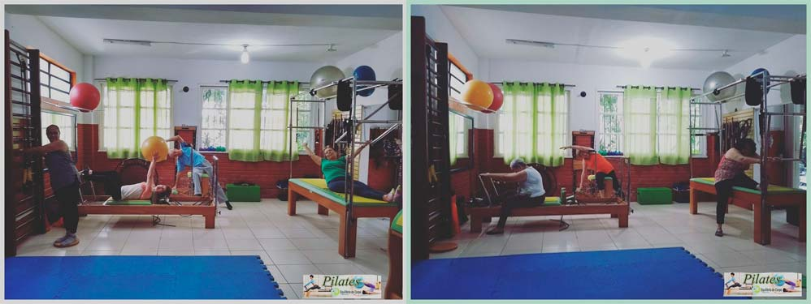
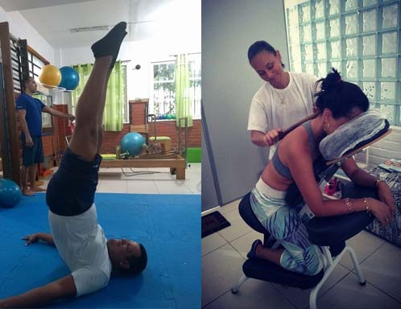

O que é a Equilibrio do Corpo?
A Equilíbrio do corpo é uma empresa especializada em atividades físicas e terapias. Trabalhamos sempre com profissionais credenciados e especializados para promoção da saúde e bem estar. Através de atividades como ginástica laboral, gestão de academias, clubes e condomínios, treinamentos funcionais, pilates, shiatsu expresso, drenagem linfática, yoga, e outros a Equilíbrio do Corpo vem se consolidando no mercado desde 2011 na cidade do Rio de Janeiro e tem como objetivo dar suporte a empresas que investem na valorização de seus colaboradores, criando um ambiente favorável ao aumento da produtividade.

Serviços
A Equilibrio do Corpo é destinada a prestar os melhores serviços na área de saúde preventiva, com foco também na sua melhoria contínua, e busca sempre utilizar os melhores métodos para oferecer saúde e bem-estar a nossos clientes.
Nossas Principais especialidades são:

-
GINÁSTICA LABORAL:
A Ginástica Laboral vem sendo utilizada como um método de prevenção e tratamento dos D.O.R.T.
(Distúrbios Osteomusculares Relacionados ao Trabalho). É uma atividade física realizada no ambiente de trabalho, de curta duração. Suas atividades são fundamentadas basicamente nos exercícios de alongamento, relaxamento e consciência corporal, compensando as estruturas solicitadas durante o trabalho, contribuindo para a melhora da qualidade de vida do trabalhador e conseqüentemente aumento da produtividade no trabalho.
-
QUICK MASSAGE:
A Quick Massage se caracteriza por ser uma massagem com duração média de 15 minutos
A quick massage se caracteriza por ser uma massagem com duração média de 15 minutos. É realizada em uma cadeira projetada para ocupar pouco espaço e ao mesmo tempo manter o cliente em uma posição confortável. Devido à sua praticidade, a quick massage pode ser facilmente realizada em empresas, eventos, shoppings, aeroportos e etc. Uma ótima alternativa para quem precisa relaxar, mas dispõe de pouco tempo.